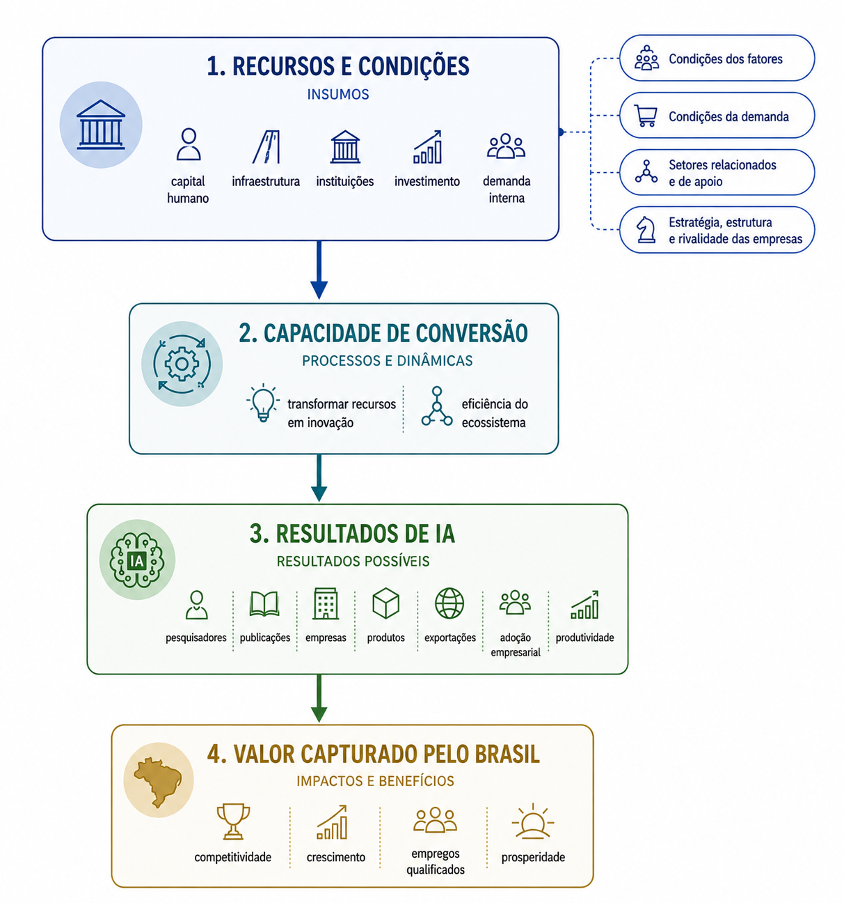
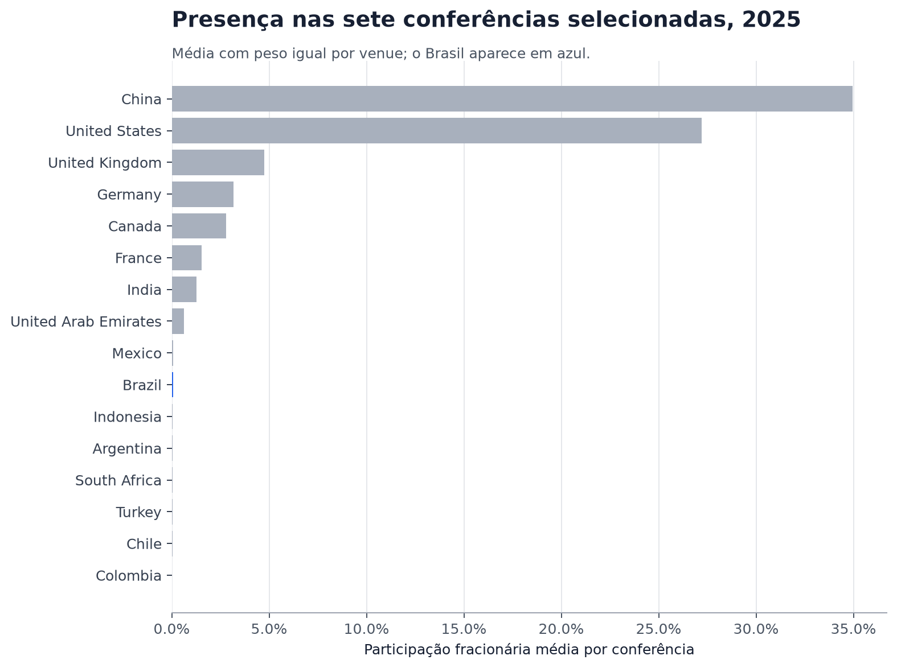
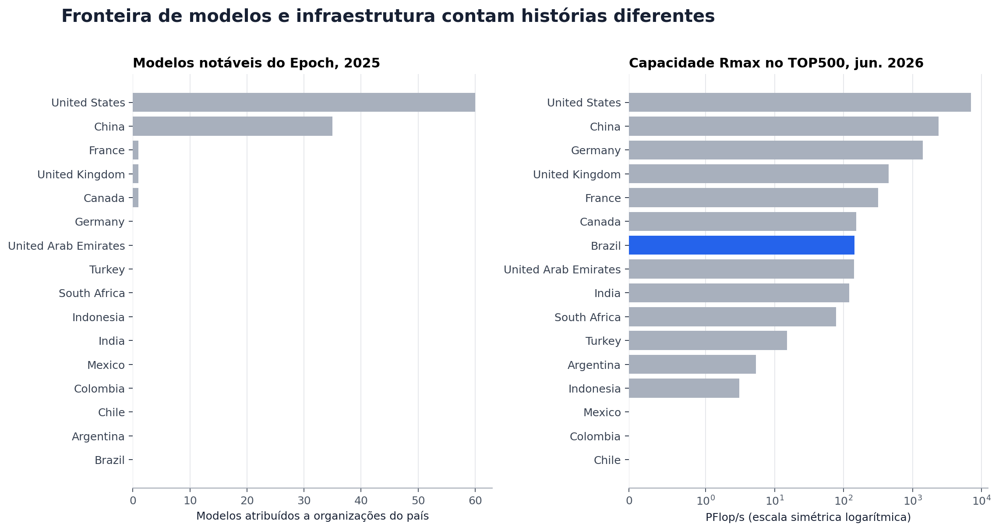
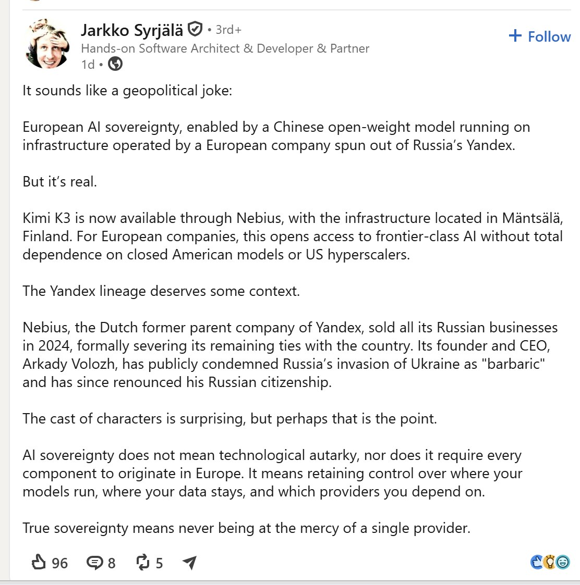
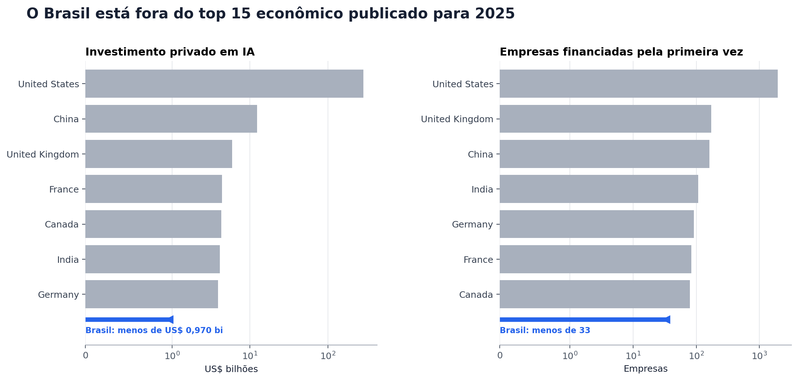

Fui convidado para apresentar um painel no USP Angels Day em que a ideia é comentar sobre as vantagens competitivas do Brasil no campo de IA em relação ao mundo.
O contexto é bastante desafiador e amplo. Então, quis dar um passo pra trás e responder a uma pergunta mais básica:
Hoje, como o Brasil se posiciona no cenário global de IA?
Ou seja, para podermos falar da vantagem competitiva, primeiro precisamos fazer uma análise para saber em que pé estamos. 1
O que é vantagem competitiva?
Para entendermos algo, primeiro precisamos defini-lo. Em um artigo da HBR, Michael E. Porter argumenta que a prosperidade nacional é criada, e não herdada. Ela depende da capacidade das indústrias de um país de inovar e aprimorar continuamente sua competitividade.
Um aspecto particularmente interessante do artigo é a definição de quatro pilares que determinam a vantagem competitiva de uma nação:
Condições dos fatores: a posição do país em relação aos fatores de produção, como mão de obra qualificada e infraestrutura, necessários para competir em determinado setor.
Condições da demanda: as características da demanda do mercado interno pelos produtos ou serviços daquele setor.
Setores relacionados e de apoio: a presença ou ausência, no país, de fornecedores e de outros setores relacionados que sejam competitivos internacionalmente.
Estratégia, estrutura e rivalidade das empresas: as condições existentes no país que influenciam a criação, a organização e a gestão das empresas, assim como a natureza da concorrência no mercado interno.
É interessante como um artigo escrito nos anos 90 envelheceu tão bem :)
Dito isso, podem-se traçar dois critérios para pautar parte da nossa definição:
- Para sermos competitivos, não dependemos apenas dos recursos disponíveis, mas também da capacidade de criar oportunidades a partir deles.
- Precisamos transformar essas oportunidades em maior capacidade produtiva para o país.
Medindo inovação
Medir inovação me parece ser um conceito bastante subjetivo, mas durante as minhas pesquisas, eu encontrei o Índice Global de Inovação da WIPO. Ele separa os insumos que viabilizam a inovação dos resultados produzidos por uma economia, o que está bastante alinhado com o que eu quero apresentar aqui. Consegui transportar a lógica desse índice para o seguinte grafo:

Assim, a quantidade de pesquisadores seria um insumo. Publicações, empresas, produtos, exportações, adoção empresarial e ganhos de produtividade seriam resultados possíveis. Para falarmos de vantagem competitiva, porém, não basta que o Brasil produza esses resultados: precisamos medir alguma diferenciação em relação a outros países e, idealmente, capacidade de transformar essa diferença em valor para o país.
A última etapa do grafo (isto é, a captura de valor) é mais difícil de medir (novamente, temos alguma subjetividade aqui). Já os resultados intermediários são um pouco mais fáceis de observar.
Um baseline
Para termos algum ponto de partida, encontrei o Vibrancy Tool do HAI, de Stanford, que consolida métricas e permite comparar países. Com isso, nós conseguimos ter uma noção inicial de onde o Brasil está hoje quando falamos de IA com uma metodologia bastante direta.
Antes de comparar, precisamos escolher o que comparar
O Vibrancy Tool é um ótimo começo, mas existe uma armadilha aqui: juntar dezenas de métricas em uma nota pode esconder justamente a parte que queremos entender. Um país pode ter pesquisadores e infraestrutura, mas não convertê-los em empresas. Pode também ter um mercado enorme, mas capturar pouco do valor gerado.
Por isso, em vez de criar um ranking novo, fixei quatro tipos de evidências e olhei para elas separadamente:
- produção na fronteira, por meio dos modelos notáveis catalogados pelo Epoch AI;
- presença científica, usando trabalhos aceitos em sete conferências selecionadas de IA em 2025;
- infraestrutura, com sistemas e capacidade Rmax do TOP500;
- conversão econômica, com investimento privado e empresas de IA financiadas pela primeira vez no AI Index 2026.
O grupo de comparação também foi definido antes de olharmos os resultados. O painel reúne o Brasil e outros 15 países:
- Estados Unidos e China, como referências da fronteira de IA;
- Canadá, Reino Unido, França e Alemanha, como economias desenvolvidas de referência;
- Argentina, Chile, Colômbia e México, para situar o Brasil na América Latina;
- Índia, Indonésia, África do Sul e Turquia, como comparadores estruturais;
- Emirados Árabes Unidos, como referência de uma estratégia recente baseada em investimento intensivo em IA.
Índia, Indonésia, África do Sul e Turquia cumprem um papel específico nessa comparação. Assim como o Brasil, são economias do G20 que não estão na fronteira global de IA, mas possuem mercados relevantes, sistemas produtivos e instituições de pesquisa já estabelecidos. A comparação ajuda a verificar se o desempenho brasileiro é apenas uma característica regional ou se apresenta alguma diferenciação diante de outras grandes economias emergentes. Os Emirados Árabes Unidos cumprem outro papel: oferecem um exemplo de construção recente e deliberada de capacidade em IA.
Esses países não são idênticos ao Brasil (e nem deveriam ser tratados assim, rs). Como queremos trazer o posicionamento vs o resto do mundo, o objetivo aqui é oferecer diferentes pontos de referência.
Podemos, então, fazer um teste simples: o Brasil se diferencia de seus comparadores estruturais em mais de uma dimensão, ou eventuais posições favoráveis ficam restritas a indicadores isolados?
Um indicador adicional compararia a participação dos países em publicações sobre Responsible AI (RAI). Para isso, desenvolvemos um classificador que identificava esses trabalhos a partir de seus títulos e resumos. Ele parecia funcionar no conjunto de desenvolvimento (dev set), mas não generalizou para o conjunto de teste: obteve 60,0% de precisão e 65,5% de recall. Essa diferença é um sinal de overfitting: o classificador se ajustou aos exemplos usados durante o desenvolvimento, mas não manteve o desempenho em trabalhos que ainda não havia visto. Por isso, preferi retirar o indicador deste primeiro estudo em vez de produzir uma comparação entre países na qual não poderíamos confiar.
O primeiro retrato
Vamos começar pela produção científica. Reconstruímos o universo de trabalhos aceitos nas seguintes conferências: AAAI, ACL, ICML, NeurIPS, EMNLP, ICLR e na trilha Applied Data Science da KDD em 2025. Quando um trabalho reunia instituições de mais de um país, dividimos sua participação igualmente entre eles: um artigo com Brasil e Estados Unidos, por exemplo, atribuía meio ponto a cada país.
Calculamos então a parcela desses pontos dentro de cada conferência e tiramos a média das sete parcelas, dando o mesmo peso a cada uma. Assim, uma conferência maior não domina o indicador apenas por publicar mais trabalhos. A identificação de país cobriu entre 91,38% e 97,38% dos trabalhos de cada conferência.

O Brasil aparece em 10º de 16 países, com 0,0640% da participação fracionária média. É uma presença pequena, embora seja a segunda maior entre os países latino-americanos deste painel.
Quanto o resultado depende de cada conferência?
A posição brasileira permaneceu em 10º lugar quando retiramos individualmente seis das sete conferências. Sem a ICML, caiu para 12º. Portanto, a presença observada não depende de uma única conferência para existir, mas parte da posição relativa do Brasil depende da ICML.
Também deixamos de fora um dos 3.703 trabalhos aceitos na ICLR, equivalente a 0,027% do universo oficial da conferência. Não conseguimos recuperar os metadados desse registro após bloqueios repetidos da API.
É importante sermos precisos: isso não mede toda a ciência brasileira em IA. Não inclui todos os periódicos, conferências regionais, impacto por citações, liderança de autoria ou especializações. Contudo, o resultado contesta a ideia de uma presença ampla nestas conferências, mas não encerra a hipótese sobre qualidade ou eficiência científica.
Quando olhamos para modelos e infraestrutura, a história fica mais interessante — e também mais difícil de resumir em dois números:

Modelos, capacidade nominal, acesso e soberania são perguntas diferentes. O Epoch ajuda a observar a primeira; o TOP500 responde parcialmente à segunda. A comparação entre nuvens e aceleradores mostra os limites do acesso, enquanto China, Europa e Emirados ajudam a entender quando infraestrutura também se torna uma estratégia nacional.
O que o Epoch não captura
No recorte do Epoch, há 103 modelos notáveis em 2025 e nenhum deles é atribuído a uma organização brasileira. O mesmo continua verdadeiro no recorte de 2026 até a data da coleta. O resultado indica ausência brasileira dentro da taxonomia e da cobertura do Epoch — não ausência de modelos locais relevantes.
O Sabiá 4, da Maritaca, ajuda a entender uma limitação desse indicador. Ele não aparece nem mesmo no catálogo completo do Epoch, que é uma base não exaustiva e prioriza modelos que avançaram o estado da arte em benchmarks reconhecidos, acumularam muitas citações, alcançaram uso significativo ou exigiram investimento elevado. No material público consultado, não encontramos parâmetros, capacidade computacional usada ou custo de treinamento do Sabiá 4. Como seus principais resultados estão concentrados em avaliações brasileiras — algumas delas internas —, o modelo pode não ser capturado por esses critérios.
Sua ausência, portanto, não equivale a uma avaliação negativa. O Sabiá foi desenvolvido com foco em português e em contextos brasileiros. Na avaliação publicada pela própria empresa, o Sabiá 4 Thinking apresenta resultados próximos ou superiores ao Opus 4.8 em algumas tarefas brasileiras, além de um custo menor para executar a suíte avaliada. O caso mostra que um modelo pode ser relevante para o Brasil sem adquirir a visibilidade, a escala ou a documentação exigidas por uma taxonomia internacional de modelos notáveis.
Também temos o Tucano 2, um modelo voltado ao português brasileiro e, entre os casos discutidos aqui, o único totalmente aberto. O projeto foi liderado pelo pesquisador brasileiro Nicholas Kluge Corrêa na Universidade de Bonn, na Alemanha. Podemos considerá-lo um modelo brasileiro pelo idioma e pelo problema que procura resolver, mas seu desenvolvimento também revela nossa dependência: o treinamento foi viabilizado por uma universidade e por infraestrutura localizadas fora do Brasil.
Capacidade instalada não é acesso
Já no TOP500, o Brasil tinha 10 sistemas e 124,52 PFlop/s em novembro de 2025; em junho de 2026, continuava com 10 sistemas e passou a 143,12 PFlop/s. É uma posição intermediária no painel, bem diferente do zero observado em modelos notáveis.
Esses sistemas mostram que algumas organizações brasileiras conseguiram investir e operar infraestrutura pertencente a um grupo relativamente seleto. Mas capacidade instalada e capacidade acessível não são a mesma coisa. O TOP500 não informa quem pode utilizar esses computadores, por quanto tempo, a que custo ou para quais tipos de projeto.
Essa diferença fica ainda mais clara quando olhamos para a nuvem. A Magalu Cloud oferece L40 e L40S em infraestrutura nacional. São GPUs bastante capazes para executar modelos, ajustar modelos menores e desenvolver aplicações. Já a H100 oferecida pela AWS, inclusive em São Paulo, foi projetada para o treinamento pesado de IA.
Sem precisarmos virar especialistas em hardware, a diferença pode ser resumida por memória, velocidade e conexão. Uma L40 ou L40S possui 48 GB de memória e movimenta até 864 GB por segundo. Uma H100 SXM possui 80 GB, chega a 3,35 TB por segundo e entrega muito mais capacidade de cálculo para treinamento. A L40S se conecta apenas por PCIe e não oferece NVLink; sistemas baseados em H100 foram projetados para fazer várias GPUs trocarem dados em alta velocidade. Para projetos grandes, não basta que cada placa seja rápida: elas precisam trabalhar juntas.
O relatório do GPT-5.6 Sol dá uma escala concreta a essa comparação. Em avaliações como NanoGPT e PostTrainBench Lite, cada tentativa recebe uma H100; no segundo teste, o agente pode utilizá-la durante cinco horas para adaptar um modelo pequeno. Isso não revela quantas GPUs treinaram o Sol. Mostra apenas que uma placa que ainda seria um recurso especial para muitas organizações já é tratada como unidade básica de um experimento.
Daí para a fronteira, a escala cresce rapidamente. Em 2025, a OpenAI informou ter aproximadamente 1,9 gigawatt de computação disponível. O Epoch converteu essa capacidade para uma unidade comum e estimou cerca de 1,7 milhão de H100-equivalentes no fim daquele ano. Pelo mesmo levantamento, a Anthropic teria acesso a 1 milhão ou mais e a xAI a 600 mil–700 mil. Juntas, as três provavelmente dispunham de pouco menos de 4 milhões de H100-equivalentes.
Isso não significa quatro milhões de H100 físicas nem que os laboratórios sejam donos delas. A unidade normaliza chips diferentes por sua capacidade teórica de cálculo, e OpenAI e Anthropic alugam grande parte da infraestrutura. A OpenAI também descreve redes para supercomputadores com mais de 100 mil GPUs e projetos do Stargate que somam mais de 2 milhões de chips em desenvolvimento. Capacidade equivalente, tamanho de um cluster e expansão planejada são medidas distintas e não podem ser somadas. Todas, porém, mostram que a fronteira é organizada na escala de data centers inteiros.
Quando computação se torna soberania
A China enfrenta o mesmo problema sob uma restrição adicional. Depois que os Estados Unidos limitaram a exportação de aceleradores como a H100 ao país, a Nvidia desenvolveu a H20 para atender o mercado chinês dentro das regras então vigentes. Ela oferece menos capacidade de cálculo para treinamento, mas possui 96 GB de memória. Esse equilíbrio favorece manter modelos grandes na memória e executá-los; por isso, ela não é simplesmente uma H100 pior.
É nesse contexto que entra o Kimi K3. Segundo a reportagem citada, a Moonshot teria usado GPUs Blackwell acessadas por meio de empresas chinesas durante o treinamento e recorre às H20 para executar o modelo. A configuração recomendada para inferência parte de 64 H20. Juntas, elas oferecem mais de seis terabytes de memória — o equivalente à memória de 128 L40S. Isso não significa que sejam duas vezes mais rápidas: significa que até a execução do modelo exige dezenas de aceleradores, memória abundante e uma rede capaz de fazê-los trabalhar como um sistema.
O caso do Kimi mostra que, apesar das restrições comerciais, parte da fronteira chinesa ainda depende da infraestrutura da Nvidia. O projeto SLAI T-Rex apresenta uma resposta diferente, mas mais limitada do que reproduzir todo o desenvolvimento de um modelo de fronteira. Na parte de sistemas, a equipe demonstrou o pós-treinamento de todos os parâmetros do DeepSeek V4-Pro, de 1,6 trilhão de parâmetros, em um SuperPOD com aceleradores Ascend 910C. Em um experimento aplicado separado, especializou o V4-Flash, menor, para problemas de pesquisa operacional. Nenhum dos dois casos corresponde ao pré-treinamento original dos modelos, e uma Ascend 910C não equivale diretamente a uma H100. O resultado relevante é sistêmico: uma etapa computacionalmente pesada pôde ser executada com chips, software e um cluster operados dentro da infraestrutura chinesa.
É aqui que a história deixa de ser apenas sobre capacidade e passa a incluir soberania computacional. Usar um provedor global pode ampliar o acesso à melhor infraestrutura, mas transfere parte do controle para uma empresa estrangeira. A China procura reduzir essa dependência inclusive na camada dos aceleradores. A Europa e os Emirados Árabes Unidos escolheram caminhos diferentes.
A Mistral começou produzindo modelos com infraestrutura e chips de parceiros globais, mas agora tenta internalizar parte dessa capacidade na Europa. A cronologia publicada pelo Mistral Compute informa que os primeiros equipamentos GB300 chegaram em dezembro de 2025 e que sistemas GB200 entraram em produção em fevereiro de 2026; ela ainda não afirma que os GB300 estejam em produção. A empresa pretende alcançar 200 MW de capacidade soberana distribuída pela União Europeia até 2027 e, separadamente, anunciou um data center de 10 MW na França dedicado inicialmente à inferência.
A escolha desses equipamentos ajuda a dimensionar a ambição. GB200 e GB300 são sistemas da geração Blackwell, posterior à H100, concebidos para conectar 72 GPUs em um único rack refrigerado a líquido. Do GB200 para o GB300, a memória por GPU cresce de aproximadamente 186 para 288 GB, e a memória do rack passa de 13,4 para cerca de 20 terabytes. O GB300 também oferece 50% mais capacidade de cálculo em baixa precisão e o dobro do desempenho nas operações de atenção; em testes com o DeepSeek-R1, entregou ganhos de 25% a 45% na velocidade de inferência. A capacidade hoje confirmada em produção é baseada em GB200, enquanto a chegada do GB300 mostra a direção da próxima expansão. Portanto, a Mistral não está apenas reservando mais GPUs: está construindo na Europa uma plataforma própria para treinamento e inferência. Os 200 MW anunciados não representam simplesmente vinte vezes o data center francês, pois incluem outros locais europeus, mas indicam a escala regional pretendida.
Essa estratégia pode parecer paradoxal porque não exige que o modelo, os chips e o provedor tenham todos a mesma origem. Um post de Jarkko Syrjälä no LinkedIn usa um caso particularmente internacional: um modelo chinês, oferecido por uma empresa europeia que nasceu da antiga controladora da russa Yandex, sendo executado em infraestrutura localizada na Finlândia.

O exemplo é informal, mas não representa uma contradição quando separamos origem de controle. Soberania não significa autarquia tecnológica nem exige que todos os componentes sejam europeus. Significa preservar opções sobre onde os modelos são executados, onde os dados permanecem, qual legislação se aplica e de quais fornecedores dependemos. A própria Nebius documenta processamento de dados em seu data center na Finlândia, enquanto a União Europeia investe em uma rede de AI Factories aberta a pesquisadores, startups e empresas.
Os Emirados seguem uma estratégia mais intensiva em capital e coordenada pelo Estado, mas ela não se resume a comprar máquinas. A Mohamed bin Zayed University of Artificial Intelligence (MBZUAI) foi criada em 2019 como uma universidade de pesquisa especializada em IA. Segundo o balanço de cinco anos da própria instituição, ela cresceu de 7 para mais de 115 professores, reúne 653 estudantes de 54 nacionalidades e 254 pesquisadores e pós-doutorandos.
Parte desse crescimento veio da atração de pesquisadores estabelecidos em centros estrangeiros. Sir Michael Brady foi professor por 25 anos em Oxford e fundou seu grupo de robótica; Ted Briscoe passou 33 anos como docente em Cambridge e liderou por mais de duas décadas seu grupo de processamento de linguagem. Ekaterina Kochmar, que fez mestrado, doutorado e pós-doutorado em Cambridge, integrou o corpo docente da MBZUAI entre 2023 e julho de 2026, quando passou a professora associada da University of Victoria, no Canadá.
A estratégia de atração vai além do corpo docente permanente. A universidade nomeou Michael I. Jordan, professor de Berkeley e uma das principais referências em aprendizado de máquina estatístico, como Laureate Professor e diretor honorário de um programa. A mesma aproximação entre academia e indústria aparece na governança: o conselho da MBZUAI reúne, entre outros, Daniela Rus, diretora do CSAIL no MIT; Lisa Su, CEO da AMD; e Peng Xiao, CEO da G42. O investimento combina, portanto, atração de pesquisadores, formação local e participação direta de lideranças científicas e empresariais.
A G42 é o principal grupo empresarial que articula a parte industrial dessa estratégia. Nascida em Abu Dhabi, ela reúne empresas de IA e computação em nuvem e tem entre seus investidores Mubadala, Microsoft, Silver Lake e o Dalio Family Office. Seu portfólio cobre diferentes camadas: a Core42 oferece nuvem soberana e infraestrutura de IA; a Khazna opera data centers; a Presight trabalha com análise de dados; e a Space42 combina satélites e IA. Em vez de uma única empresa de modelos, a G42 organiza um conjunto de empresas que vai da infraestrutura física às aplicações.
Entre a universidade e o grupo empresarial, o governo de Abu Dhabi criou ainda o Technology Innovation Institute (TII), braço de pesquisa aplicada do Advanced Technology Research Council. Ele não é uma universidade nem uma empresa de nuvem: reúne cientistas e engenheiros em áreas como IA, robótica, criptografia, computação quântica, materiais e energia, com a missão de transformar pesquisa em tecnologia. Para esta análise, seu resultado mais visível é a família de modelos Falcon.
Na infraestrutura, a G42 começou acessando capacidade como o Condor Galaxy 1, um supercomputador de 4 exaFLOPs localizado e operado nos Estados Unidos. Agora, o Stargate UAE prevê uma primeira etapa de 200 MW em 2026, expansão até 1 GW — cinco vezes a capacidade inicial — e inserção em um campus de IA de 5 GW em Abu Dhabi. O campus completo corresponde a 25 vezes a primeira etapa, embora inclua outros projetos e operadores. Os sistemas serão fornecidos pela Nvidia e operados em parceria com OpenAI e Oracle: a tecnologia continua estrangeira, mas capacidade física, universidade, pesquisa aplicada e indústria passam a estar articuladas dentro do país.
China, Europa e Emirados não eliminaram suas dependências; escolheram onde reduzi-las. A China avança também sobre os chips. A Europa procura controlar regionalmente data centers e dados usando hardware estrangeiro. Os Emirados usam capital, energia e acordos diplomáticos para instalar capacidade global de ponta em seu território.
Onde o Brasil se encaixa
O caso da Maritaca permite qualificar a comparação com a Mistral. A empresa brasileira já demonstra capacidade de desenvolver e operar modelos locais e informa, na seção de perguntas frequentes de seu site, que o treinamento ocorre majoritariamente em TPUs do Google Cloud. Ao mesmo tempo, sua documentação oferece variantes BR-SP com inferência e processamento realizados integralmente no Brasil. A empresa não identifica publicamente qual provedor hospeda especificamente essas variantes. Portanto, podemos afirmar que os dados e o processamento permanecem no território nacional, mas não que a infraestrutura seja operada por uma empresa brasileira ou americana.
Isso se parece com a primeira etapa da trajetória francesa: uma empresa nacional consegue produzir modelos usando infraestrutura global e começa a localizar sua operação. Entre os casos brasileiros examinados, porém, não encontramos uma iniciativa que tenha avançado para a segunda etapa em escala comparável: transformar essa competência em uma plataforma regional de computação para treinamento e inferência que também possa ser utilizada por outras empresas e laboratórios.
Nos casos e fontes examinados, não encontramos no Brasil uma estratégia em escala comparável às discutidas acima: uma cadeia de aceleradores equivalente à chinesa, uma plataforma regional como a que a Mistral está construindo ou um projeto que integre data center, universidade e indústria na dimensão dos Emirados. Há sinais de investimento concentrado no TOP500, modelos locais especializados e alguma oferta nacional de nuvem, mas eles ainda não demonstram uma infraestrutura suficientemente avançada, distribuída e acessível para sustentar inovação em escala. A infraestrutura brasileira continua sendo uma evidência mista.
E a conversão econômica?
O AI Index 2026 publica apenas os 15 primeiros países em investimento privado em IA e em empresas financiadas pela primeira vez em 2025. O Brasil não aparece em nenhuma das duas listas. Isso não significa que seu resultado seja zero, mas também não nos permite estimá-lo. Sabemos apenas que ele ficou abaixo do valor do 15º colocado.

Por isso, o gráfico não apresenta uma medida do investimento brasileiro. A linha azul mostra todos os valores ainda compatíveis com a informação publicada, de zero até o limite em que o Brasil entraria no ranking. Podemos afirmar apenas que o investimento foi inferior a US$ 0,970 bilhão e que foram financiadas pela primeira vez menos de 33 empresas. O valor real pode estar próximo desses limites ou muito abaixo deles. Isso é suficiente para contestar uma posição econômica globalmente destacada em 2025, mas não para estimar quanto foi investido no Brasil — e muito menos para atribuir esse valor a setores específicos.
O baseline, então, fica assim:
| Família | Resultado brasileiro | Leitura |
|---|---|---|
| Modelos notáveis | 0 em 2025 e 0 no acumulado de 2026 (year to date, YTD) | contrária à presença observada na fronteira |
| Conferências selecionadas | 0,0640%; 10º/16 | contrária à liderança científica ampla |
| TOP500 | 10 sistemas; 143,12 PFlop/s em jun. 2026 | mista |
| Investimento privado | < US$ 0,970 bi em 2025 | contrária à liderança econômica ampla |
| Novas empresas financiadas | < 33 em 2025 | contrária à conversão ampla |
No conjunto dos indicadores, não encontramos superioridade consistente do Brasil diante dos comparadores estruturais. Produção na fronteira, ciência selecionada e indicadores econômicos ficam atrás; infraestrutura é a exceção parcial, mas ainda sem evidência de acesso e uso.
Então onde pode estar a vantagem?
A ausência de uma liderança ampla não responde à pergunta original por completo. Porter não diz que um país precisa vencer em tudo; a vantagem pode aparecer na combinação entre fatores, demanda e setores específicos. O próximo passo é procurar mecanismos que sejam plausíveis e mensuráveis, sem transformar bons exemplos em conclusão nacional.
P&D: pouco para a fronteira, mas não pouco entre os pares
Segundo o World Development Indicators, o Brasil investiu 1,19% do PIB em P&D em 2023. No nosso painel, isso o coloca em 9º de 16: abaixo de Estados Unidos, China e das referências desenvolvidas, mas acima dos demais países latino-americanos observados e de Índia, África do Sul e Indonésia. A Turquia, com 1,42%, está à frente.
Ou seja, chamar o investimento brasileiro simplesmente de baixo seria esconder metade da história. Ele é limitado diante da fronteira, mas relativamente forte entre vários pares. Ao mesmo tempo, esse insumo intermediário convive com resultados modestos nas conferências, zero modelos notáveis observados e conversão econômica fora do top 15.
A evidência sobre P&D é, portanto, mista e fortalece outra pergunta: nosso problema é somente colocar mais recursos, ou também conectá-los melhor? Ainda não conseguimos separar P&D público e empresarial comparável nem identificar a parcela específica de IA. Os anos disponíveis também variam entre países. Portanto, não temos uma estimativa causal de eficiência.
Ciência e infraestrutura: duas lacunas diferentes
A evidência das sete conferências é inconclusiva para avaliar a capacidade científica brasileira como um todo. O resultado naquele recorte é fraco, mas não mede impacto, especialização ou produção por pesquisador. Podemos dizer que não encontramos liderança ampla naquele recorte; não podemos dizer que testamos toda a ciência brasileira em IA.
Na infraestrutura, a conclusão permanece mista. Existe capacidade HPC nominal que coloca o Brasil no meio do painel, mas faltam os elos decisivos: aceleradores adequados, acesso efetivo, custo e uso. É uma diferença importante. Possuir um sistema e conseguir transformá-lo em experimentos, modelos e produtos são etapas distintas do nosso grafo.
Demanda e setores: três hipóteses que valem continuar testando
O Brasil tinha cerca de 212,8 milhões de habitantes em 2025, segundo o Banco Mundial. Escala, por si só, não é vantagem; Índia, China e Indonésia tornam isso bastante evidente. Ela passa a importar quando vem acompanhada de dados próprios, problemas locais, rivalidade e empresas capazes de aprender com o mercado.
Encontrei três candidatos que ilustram esse mecanismo:
- Finanças. Aqui já existe alguma produção científica dentro das empresas. Pesquisadores do Nubank publicaram o preprint do
nuFormere tiveram um segundo trabalho, sobre agentes de atendimento em produção, aceito no KDD 2026. O Itaú também apresentou oBERTaú, originalmente divulgado como preprint em 2021, no workshop LatinX in AI da NeurIPS 2023. É uma distinção relevante: trata-se de participação em um workshop, não de publicação no main track da conferência. Não encontrei, neste levantamento, um trabalho do Itaú no KDD comparável ao do Nubank; isso continua sendo uma busca incompleta, não evidência de ausência. - Jurídico. O Jus IA combina um produto especializado com o acervo jurídico local, e o Jusbrasil começou a converter essa atividade em pesquisa. Há um estudo do próprio produto e trabalhos em colaboração com a Maritaca, como o
Magis-Bench, apresentado no ICAIL 2026, conferência internacional especializada em IA e Direito. Já oJuru, publicado no BRACIS 2025, é um trabalho da Maritaca com pesquisadores da USP, sem autores do Jusbrasil. O conjunto confirma capacidade de pesquisa aplicada, mas a presença ainda é pontual e concentrada em preprints, uma conferência brasileira e um veículo internacional especializado — distante de uma participação recorrente nas principais conferências gerais de IA. - Português e especialização de domínio. A Maritaca desenvolve modelos voltados ao português, e sua relação com o Jusbrasil mostra um caminho concreto de pesquisa e modelo local para uma aplicação vertical.
Esses casos ajudam? Sim, como hipóteses. Eles mostram mecanismos reais: dados transacionais, acervo jurídico, idioma e distribuição local. Mas ainda não temos comparadores internacionais equivalentes, contrafactuais, receitas específicas, custo total, dependência de cloud e modelos externos, exportações ou captura local verificável.
Declarações corporativas podem provar que um produto existe; não provam, sozinhas, que ele constitui uma vantagem competitiva do país.
Uma cadeia ainda incompleta
Voltando ao nosso grafo, encontramos uma cadeia desigual. O Brasil possui alguma base de P&D, sistemas relevantes de HPC e empresas capazes de transformar conhecimento técnico e dados locais em produtos. Esses elementos, porém, não aparecem na mesma intensidade nos indicadores de presença científica internacional, modelos de fronteira e conversão econômica.
Essa diferença não permite concluir simplesmente que o Brasil possui os recursos necessários, mas não sabe convertê-los. O investimento em P&D usado aqui não é específico de IA, e a capacidade registrada no TOP500 não representa necessariamente aceleradores adequados e acessíveis. Em relação aos países líderes, também existe uma diferença absoluta de capital, computação e investimento.
O que os casos de Nubank, Itaú, Jusbrasil e Maritaca acrescentam é uma hipótese mais específica: em alguns setores, já existe uma conexão entre produção intelectual, dados próprios, conhecimento de domínio, distribuição e produto. O que ainda não demonstramos é que essa conexão seja recorrente ou que forme um sistema capaz de levar esses produtos à escala internacional e capturar valor para o país.
Portanto, este estudo não identifica um único “gargalo de conversão”. Ele revela três questões que precisam ser separadas: a escala dos recursos disponíveis, sua adequação e acessibilidade para IA e o encadeamento entre pesquisa, infraestrutura, empresas e capital. As evidências disponíveis mostram fragilidade no conjunto da cadeia, mas não permitem atribuí-la a uma única etapa.
E o que podemos responder à pergunta inicial?
Não encontramos uma vantagem competitiva ampla do Brasil em IA. Encontramos competências e vantagens candidatas em setores específicos, mas ainda não há evidência de que elas componham um sistema recorrente, escalável e internacionalmente competitivo.
É uma conclusão menos empolgante do que começar com uma lista de setores em que “o Brasil é forte”. Na minha opinião, ela também é mais útil. O debate deixa de ser apenas quantos pesquisadores, GPUs ou bilhões temos e passa a distinguir a escala dos recursos, sua adequação e acesso e as relações necessárias para que pesquisa, infraestrutura, empresas e capital se reforcem mutuamente.
Limitações e próximos testes
Este é um estudo exploratório, não um censo de todo o ecossistema. As conferências representam um recorte; o Epoch possui uma taxonomia própria; o TOP500 mede HPC nominal; e a fonte dos indicadores econômicos publica apenas os 15 primeiros países, sem informar os valores dos demais. As observações de P&D têm anos diferentes, e os estudos de caso dependem parcialmente de informações das próprias empresas.
Também deixamos três perguntas abertas, agora de forma explícita:
- A presença científica muda quando medimos impacto, liderança e especializações brasileiras, normalizando por pesquisadores e investimento?
- Quanto da infraestrutura nominal é realmente acessível para IA, e quem consegue utilizá-la?
- Em que medida as competências de IA observadas em Nubank, Itaú, Jusbrasil e Maritaca se traduzem em produtividade, expansão internacional e valor capturado no Brasil — e como esses resultados se comparam aos de empresas semelhantes em outros países?
Os resultados finais processados, metadados de coverage e checksums estão na pasta experiments/ai-opportunities-in-brazil/publication. Os schemas que auxiliaram a tomada de decisão, scripts e testes ficam na pasta do experimento. Os dados brutos e caches locais não são versionados; os experimentos registram quais artefatos originaram cada tabela publicada e seus hashes. A coleta foi fixada em 29–30 de julho de 2026; quando aplicável, os números desse ano representam o acumulado até a data da coleta. Assim, conseguimos voltar a essas perguntas sem mover as hipóteses iniciais depois de conhecer o resultado.
Notas de rodapé
A pesquisa e a implementação deste estudo foram feitas com o auxílio do GPT-5.6 Sol. A seleção das fontes, a verificação dos resultados e as conclusões são de responsabilidade do autor.↩︎